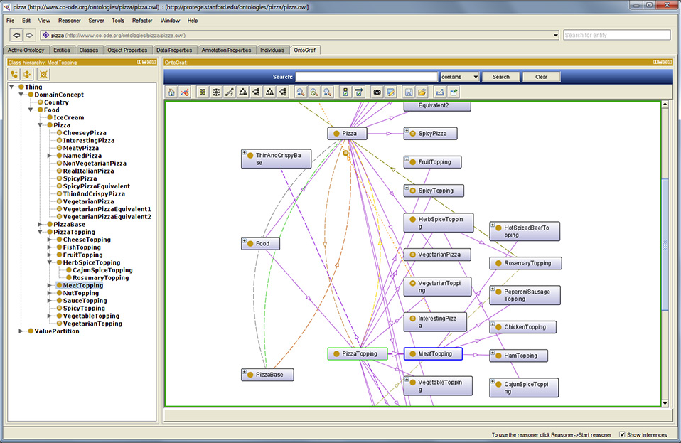

Tecnologia
Pessoas entendem significado em diferentes contextos, computadores não.
Ontologias são artefatos que computadores usam para lidar com representações de coisas do mundo, aquelas com as quais convivemos diariamente sejam árvores, bactérias, carros, instituições, livros, loterias, governos, pessoas, suas profissões, sistemas, etc.
Esses artefatos, chamados “ontologias”, fornecem esquemas aos computadores tornando-os capazes de suportar inferências lógicas, ou seja, raciocínio automático. As ontologias são representações formais e rigorosas das coisas do mundo e das relações entre elas.
Essa é a abordagem da disciplina da Ontologia Aplicada, onde a ênfase recai na representação das coisas em si e não nas palavras usadas para descrever tais coisas. Por sua ênfase em representar coisas, e não a complexidade da linguagem humana, ontologias são empregadas em todo o mundo para interoperabilidade entre sistemas na área médica, legal, industrial, dentre outras.
Ontologias na Web Semântica
Ontologias estão associadas a sistemas de informação e podem ser usadas tanto por pessoas quanto por máquinas. Estão atualmente envolvidas com os esforços para fornecer semântica aos recursos da Internet, no ambito da Web Semântica.
O World Wide Web Consortium (W3C) cria e mantém os padrões para as tecnologias da Web Semântica que incluem linguagens de representação lógicas, linguagens de consulta, interfaces e mecanismos de inferência.
Por que tecnologias da Web Semântica?
- Os princípios teóricos da Ontologia Aplicada, adotados na construção de artefatos ontológicos, proporcionam modelos bem fundamentados;
- A ontologia é um modelo declarativo que torna explícita a expertise de um domínio do conhecimento;
- Ontologias lidam com mudanças no status do conhecimento, enquanto mudanças em bancos de dados levam a retrabalho com a criação imediata de novas tabelas;
- A ontologia é computável e útil no local onde está, além de continuar disponível na forma original para consultas em aplicações distribuídas;
- A cláusula de mundo-aberto permite lidar com conhecimento complexo e incompleto;
- A ontologia faz uso de identificadores únicos que definem recursos do modelo de forma unívoca, ao longo das três camadas (conceitual, lógica e física).
Existem muitas metodologias para a construção de ontologias, mas ainda se diz que construir ontologias é um trabalho um tanto “artesanal”.
As etapas variam muito, mas observem em geral as seguintes:
- Especificação
- Aquisição de Conhecimento
- Organização ontológica de entidades
- Organização ontológica de relacionamentos
- Formalização
- Avaliação
Editores de ontologias consagrados com o Protegé da Standford University tem sido desenvolvidos desde os anos de 1990 e corresponde ao estado da arte em desenvolvimento, com excelentes resultados em todas as áreas.

Tela com visualização no Protegé, disponível em https://protege.stanford.edu/products.php, acesso em 21/10/2021.
Uma opção para iniciantes, em fase de desenvolvimento, é o ONTO4ALLEDITOR.